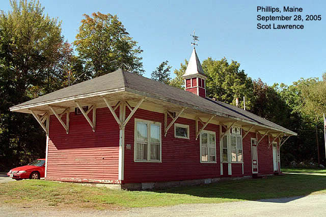
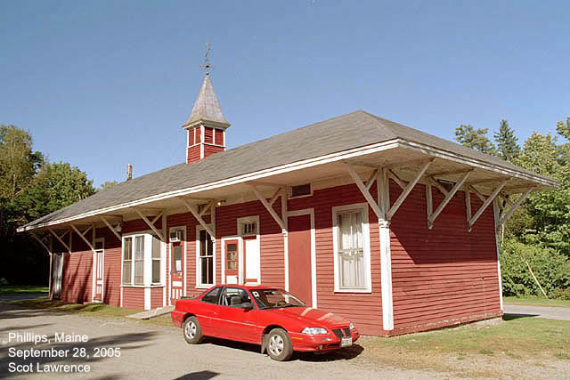
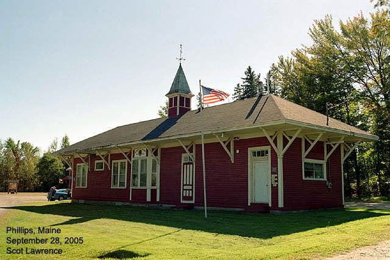
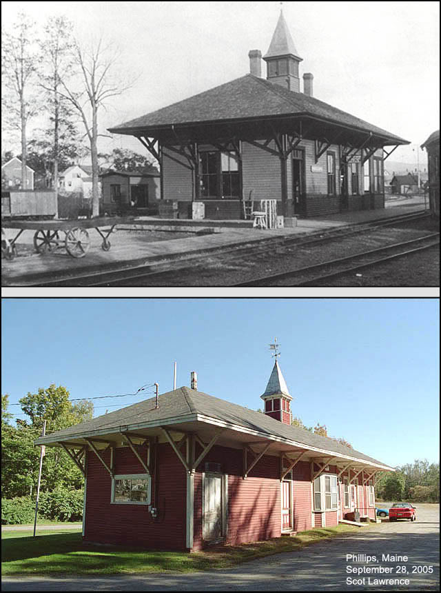
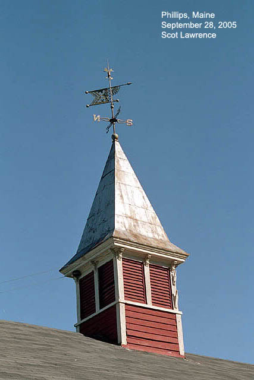

Phillips,
Maine on the SRRR and SR&RL, 1879 - Today. Sandy River Railroad and
Sandy River & Rangeley Lakes Railroad.
Sandy River Railroad.
Sandy River &
Rangeley Lakes Railroad.
Yard and shop
facilities in Phillips, Maine.
I'm trying to
put together a timeline for the Phillips yard..
listing the different
Engine houses, Roundhouses and Turntables (and the two stations) that existed
there
at different
times.
I plan to eventually
build an O-scale model of the first roundhouse at Phillips,
the wooden 5-stall
roundhouse, and i'm trying to trackdown its timeline.
(I also plan
to build the turntable and depot)
I was going to
type this all out in a thread on the yahoo groups..but I will put it into
webpage form instead,
because its much
easier for me to edit this way, and it will look a lot neater than basic
text in a thread..
which will make
it all easier to follow and understand.. so here is the page..
Most of the timeline
data below comes from two books:
"Two feet between
the Rails" volumes I and II. by Robert Jones, 1979.
"The Maine Scenic
Route" by H. Temple Crittenden, 1966.
These books are
fairly old now, and I suspect some of the timeline data is now known
to be incorrect..so
im asking for help from the "2-footer community" to please help me fill
this in
with correct
dates and data! thanks! 
I am posting this
timeline on two internet discussion forums:
the Maine
2-foot Quarterly forum.
and the Maine
On2 forum.
A
History of Phillips Yard:
1879 - June 5
-
Construction begins on the SRRR at Farmington and moves north toward Phillips.
1879 - Autumn
- Work
begins on the Phillips yard, as the mainline creeps north from Farmington.
1879 - November
20 - First trains arrive in Phillips! marking the completion of the
SRRR.
The SRRR's two locomotives, the "Dawn" and the "Echo" arrive in Phillips
for the
first time. These were the B&B "Aerial" and "Puck", built for the B&B
by Hinkley
only two years before.
1879 - December
- First Phillips yard structures
built:
and into
1880.
Rectangular enginehouse (not a roundhouse) (photo page
41, Jones Vol 1.)
( this is enginehouse #1)
First turntable built.
First depot built, the large "covered depot" with the track
running through it.
also a repair shop, 56x20 feet, with one track able to hold two locomotives,
a blacksmith shop,
and a 84x20' woodshed.
1891 - August
- 2nd turntable built at Phillips..this is the wood turntable visable
in the photo at the top
of the page..(I have never seen a photo of the first turntable.)
This turntable existed 1891 - 1921. (assuming the dates
are correct, they might not be,
and assuming in not missing any! which is also possible.)
1897 - June 19
- Enginehouse fire! Locomotives 4 and 5 damaged.
(page
204, Jones Vol 1.)
"engine house almost totally destroyed" (photo
page 198, Jones Vol 1.)
1897 - August
- "A new SRRR enginehouse, (enginehouse #2), and machine shop was
started at Phillips
in August (1897) to replace the burned-out structure. It was completed
in early November and
contained five stalls and pits, one for each engine on the road and
one extra" (page
208, Jones Vol 1.)
This is the 1897 wood 5-stall roundhouse in the photo at the
top of this page,
and the one i'm planning to model. This roundhouse only existed six years,
1897-1903.
1900 - spring
- Second depot built at Phillips, (this is the depot
that still exists today.) The new depot
replaced the original "covered depot" from 1879, which existed for 20 years.
The new Phillips depot was originally shorter, 18 x 24 feet, similar to
the Strong depot,
it was later elongated to its current configuration.
This Phillips
yard arrangement, circa 1900, is shown in the photo at the top of this
page.
2nd turntable,
2nd enginehouse, 2nd depot.
1903 - June 7
- Enginehouse #2, the 5-stall wood roundhouse, burns in a fire. (photo
page 298, Jones Vol 1.)
Three locomotives were in the roundhouse at the time of the
fire "Two belonging to the SRRR
and one to the F&M" "By the time the fire was extinguished, only
the brick walls were standing.
An addition was being built on the rear of the roundhouse at the time of
the fire" (page 303, Jones Vol 1.)
(question..If this was a wooden roundhouse..what brick walls were
left standing?
Or do the brick walls refer to the addition being built on the rear of
the roundhouse?)
1905 - December
- enginehouse #3 is built at Phillips, a 10-stall brick roundhouse.
"At Phillips, the new SRRR 10-stall roundhouse
was completed in December. (1905)
The walls were of brick, with steel supports. This was a much needed addition
to the
roads servicing facilities, and was immidaetely put to maximum use"(page
323, Jones Vol 1.)
1908 - September
- Phillips depot is enlarged to its current length.
1921 -
The 2nd turntable is replaced by a steel turntable bridge (new,
wider pit too? unknown)
this is turntable #3, which lasted until the
end of the railroad.
the steel bridge was cut down to 45' from a 60' MEC turntable bridge.
1923 -
February 12 - Enginehouse #3 burns, this is the 10-stall brick roundhouse
from 1903.
The machine shop attached to the rear of the roundhouse was saved.
Nine locomotives were inside the 10-stall roundhouse when the fire broke
out in the pre-dawn hours: 6, 8, 16, 17, 18, 19, 21, 22, and 23.
16 and 23 were pulled out and only suffered minor damage, the rest suffered
much more damage.
Only four locomotives were not in the Roundhouse that night..
15 was at the Phillips paintshop, 9 and 24 were at Kingfield, and 10 was
at Rangeley.
1923 -
Aug-Oct - Enginehouse #4 is built. This is another 10-stall brick roundhouse
very similar
to the roundhouse it replaced..there are minor differences in brickwork
visable
in photos, also doors and smoke vents are different.
This is the roundhouse that remained in use until the end of the railroad
in 1935,
and stood until the 1970's.
1934 - the
SR&RL is near the end of it's life, and in very poor financial health
in the early years of the
Great Depression..as a cost-cutting measure, the line is abandoned north
of Phillips...
in August, September and October 1934 rails are removed between Rangeley
and Reddington.
work then stops for the winter.
1935 - spring
- removal of rails continues until all track north of Phillips is
gone, and management
makes the decision to sell the entire railroad at auction.
1935 - May 18
- The railroad is sold at auction.. it is generally understood that the
new owners will probably
not wish to operate the line, and that it was probably sold for scrap.
The railroad will continue operations until the new owners take possesion
on July 1.
1935 - June 30
- Last day of regular operations of the SR&RL, the railroad technically
ceases to exist
the following day, July 1st. :(
1935 - July 1
& 2 - "clean up" trains operate to bring in all remaining cars to Phillips.
1935 - August
- scrapping of locomotives begins in Phillips. Ten locomotives remain at
this point.
#22 is first, scrapped on her turntable lead, where she spent her last
few years.
followed by 19 and 16.
The remains of 7, 20 and 21 were stored in the "Old stone fort" across
the river,
they were cut up there. 23 was cut up in 1936.
Number 24 almost made it! she was sold to a local railfan for $250
and stored.
but after a few years, he realised he couldnt afford to keep her..had nowhere
to
run her..so she was also sold for scrap..such a shame.
1936 - August
- Only two locomotives remain, 9 and 18. both are still operating.
18 is used as the primary power for the scrap trains removing the rails,
and 9 is
kept in reserve. In August 1936 the two locomotives steamed out of Phillips
yard
for the last time, never to return. Rails were lifted behind them.
1936 - September
16 - Last rails removed from Farmington yard. 18 and 9 dropped their fires,
and were
scrapped where they sat.
Only ONE SR&RL
locomotive survived! SR&RL No. 6, who left the railroad in 1924 when
she was sold to
the Kennebec
Central. She then went on to the WW&F, then spent many decades stored
in the famous shed
at Alice Ramsdell's
farm. Today she survives as WW&F
No. 9 and lives at the WW&F museum in Alna,
where she is
being restored to operating condition!
she is the only
surviving Portland Forney.
197? - remains
of the Phillips roundhouse burn.
1976 - Last remnants
of the Phillips roundhouse are torn down, after the 197? fire only 5 stalls
remained standing, with no roof.
2008 - Today,
only two structures remain in Phillips yard, the depot and the car shed.
but across the river, the SR&RL museum
is rebuilding some of the line!
And thats everything
I have so far! LOTS more to add!
I intend to add
dates for the Salmon Hole bridge (original wood bridge and 2nd steel bridge)
the trestle work
leading into Phillips yard..beginning of the P&R, P&R wood covered
bridge north
of the yard.."old
stone fort"..end of the railroad, roundhouse demolished 1970's..etc etc
etc..
all this info
is in books I own..I will add it all later..
Gary Kohler at
Maine
2-foot Quarterly is coming out with a new book soon "A Chronological
History of the Sandy River & Rangeley Lakes Railroad" which I intend
to get as soon as its available..which will probably contain more dates
for Phillips yard..
The main inspiration
for making this page about Phillips yard specifically stems from my plans
for my future
On2
model railroad and its trackplan. I plan to model Phillips yard approximately
as it appeared around 1900,
as seen in the
photo above..here it is again:

I love the wood
turntable! The 5-stall wood roundhouse..the 3-way stub switch..its all
perfect!
I'm not
really concerned with modeling a specific date though, as it relates to
the model railroad as a whole..
For example,
I plan to run SR&RL #23 and the railbusses! which didnt exist in 1900..but
details like that
don't bother
me...im choosing that particular yard "era" because I like how it looks..nothing
more.
(and well..I
also dont have room for the later 10-stall roundhouse!  so thats a factor too..)
so thats a factor too..)
Question about
that 5-stall wood roundhouse..
According to
the dates above, that particular 5-stall wood roundhouse was built in 1897
and burned to the ground in 1903. was then replaced with the 10-stall brick
roundhouse in 1905..
I suspect some
of the dates above might be wrong..
because there
is a drawing for a "1905 five-stall brick roundhouse"!
which obviously
confuses me..since it should be a 1905 10-stall brick roundhouse..
I would like to
find a drawing, if one exists, for the 5-stall *wood* roundhouse.
there is the
drawing for the 5-stall *brick* roundhouse in the "Two Foot Cycolpedia
Plan Book."
which I own..but
I don't understand which roundhouse this drawing represents.
(could the drawing
perhaps be half of the 1905 10-stall roundhouse?..just a guess..)
can anyone shed
any light on the correct dates for which roundhouses??
thanks!
Also, I said "1879-Today"
because I plan to track the history of the yard area right up to today!
I have only visited
Phillips once so far, but I plan to go back.
Here are some
photos from my 2005
trip:

SR&RL station,
Phillips Maine.
Today only two
structures remain in Phillips yard from the SR&RL.
The Phillips
depot, and the car shop building.
(I think its
the car shop..is that correct?)


I have three photos
in my collection of Phillips that I have picked up over the years..
I brought the
photos with me and attempted to photograph the same scene as it looks today.
Below is the
south end of the yard, looking north. the depot is on the right edge:

Below is a scene
from the North end of the yard, looking south:

And below is a
view of the depot..
notice that the
vintage photo shows the depot in its original, shorter configuration.
It was built
to the same design as the Strong station (which was never elongated)
the Phillips
depot however was later nearly doubled in length, to make room for
additional needed
office and baggage space..its this "expanded" depot that still exists
today:


I want to go back
and explore Phillips more, and add more current photos to this page..
like the turntable/roundhouse
area (even though there is nothing much to see today..just an empty lot)
and the bridge
abutments..the ROW through town..things like that.
If anyone has
more photos they would be willing to let me use, I would appreciate it!
you will get
full credit of course..I would like to include more photos of the earlier
and later
engine/round
houses particularily..anything related to Phillips yard would be
welcome!
thanks!
Scot
Related links:
Maine
On2 forum on yahoo
Maine
2-Foot Quarterly forum on yahoo
Maine
2-footer forum on yahoo
Maine
2-foot Quarterly magazine.
The
Maine On2 FAQ
Build
the Phillips water crane!
Check out the
FOUR 2-footer museums in Maine!
Maine
Narrow Gauge Railroad Co. & Museum - in Portland
Wiscasset,
Waterville, and Farmington Railway - in Alna
Sandy
River & Rangeley Lakes Railroad - in Phillips. (north of
the yard discussed on this page..today's SR&RL
is just across the river, less than a mile away, in the old P&R yard.)
Boothbay
Railway Village - in Boothbay
 Back
to my main page. Back
to my main page.
|